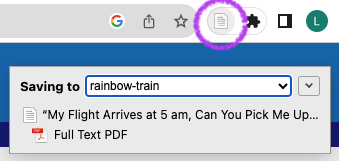

Bibliography
Literature research
Consider writing one paragraph to introduce your PhD topic to a scientific audience. Do a brief online literature research and find three scientific articles that you would use to write this paragraph. As part of this literature research, do the following:
Part 1
- Open Zotero
- Under Groups, right-click ‘ost-hs23’ > New Collection …
- Use your GitHub username as the name for the collection
- Hit OK
Part 2
Open the browser for which you installed the Zotero Connector (if you did not yet install the Zotero Connector, head back to the pre-course work for Zotero)
Open the web pages that show the three scientific articles you want to store in your bibliography. Try to open the original page of the publisher (e.g. “My Flight Arrives at 5 am, Can You Pick Me Up?”: The Gatekeeping Burden of the African Academic).
Find your Zotero Connector Add-on. It’s often placed in the top right of your browser.
Zotero Connector for Safari users
Zotero Connector for Safari is bundled with the Zotero 6 desktop app.
See here how to activate it: https://www.zotero.org/support/kb/safari_compatibility
Click on the Zotero Connector icon. If a dialogue opens, click Got it.
Click on the Zotero Connector again. The item has changed, it now looks like a paper.
The scientific article is stored as a reference your Zotero app and sorted into the Collection that you have selected.
Repeat this process for the other two articles that you selected.
Part 3
- Head back to the Zotero app
- Right-click your Collection
- Click Export Collection
- Under ‘Format’, select Better BibTeX
- Keep all checkboxes unselected (see Figure 1)
- Save the exported .bib file to a local folder of your choice
Better BibTeX format not available?
If the Better BibTeX format is not available for you, head back to the pre-course work assignment for Zotero and setup the Add-on: